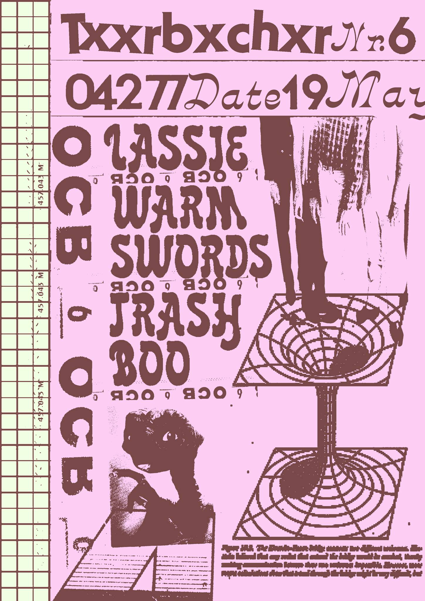

Spontaneous Pownsdorf Rock Academy showcase hosted by Income Tax Refund and WHAT WE DO tonight at Connewitz’s T6, 9pm sharp!

PAUNSDORF ROCK ACADEMY Allstar Night !! @ T6 / Connewitz
WARM SWORDS [nz,ch,pownsdorf |
lofi,garage,punk]
“Solo-project” of Regals
very own Caelan O'Flaherty. Born in New Zealand, raised in France,
lived in Belgium, now living in Leipzig where he found his live band
featuring two members of The Staches / Maraudeur.
Eight songs recorded on his own, continuing where Regal once stopped.
“Demostruction” is the first attempt to grow, showing what’s possible
and that LoFi Garage is a real thing.
https://warmswords.bandcamp.com/
LASSIE [pownsdorf | garage, new
wave, eu-punk]
“New Wave. Not in a some platitudinous "planning a theme party” big
hair/funny sunglasses/talkin’ Valley Girl kind out of way. I’m talking
truly bonified oddballs. Too freaky for the crowd that took theater
class and boisterous and funny for the kids that always hung out in the
art room. They may not be hip with the coolest and newest music out
there, but everything they were into was a bit strange and usually
listened to at a ridiculously loud volume. […]
I dunno about your
neighborhood but mine could sure use a combo of loons like Lassie. I
would then know that if I saw a flyer for a new wave dance party
happening around town, it just wouldn’t be some boor playing Howard
Jones mp3’s off his laptop.“ (Dale Merrill/Smashin Transistors)
…LASSIE will play
first at 9pm sharp!!
https://lasssie.bandcamp.com
TRAASHBOO [le | noise, fal-core]
noise-punk-techno performance by a huffy trashman (on vocals and guitar) and his whipping boy.
https://www.youtube.com/watch?v=PL2eMSVsLfY
DREHSCHEIBE POWNSDORF DJ
Team
(including members of Lassie & Staches & The Golden Schmucks)
all
night long! New Wave/Punk/Garage/Daddy Rock/Hits
LOCATION: T6 [txxhrbxchxr str 6 / Connewitz]
DOORS: 20h00
START: 21h00 sharp!!!!!
CURFEW: next morning
don’t forget your WGT
outfit.
[Poster by FUZZGUN]